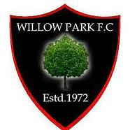
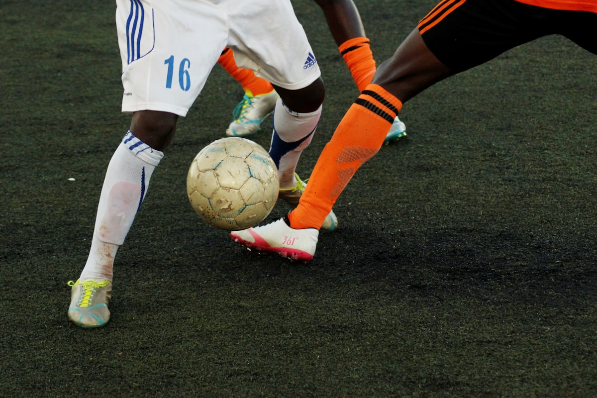

Combined Counties League · Division 1
Willow Park
Monksland Utd

Join the clubAthlone, Co. Westmeath · Grassroots football
Fifty-three years of Sunday mornings. One pitch, one parish, one red and black shirt. New players always welcome.
Club history
Willow Park Football Club was founded in 1972, named for the park it still calls home on the west side of Athlone. No academy fees, no franchise, no shortcuts. Just a pitch, a clubhouse, and a townful of people who show up.
Half a century on, the shirts are still red and black and the willow tree is still on the crest. Generations of Athlone families have togged out here: kids on Saturday mornings, seniors on Sunday, and everyone in the clubhouse after.
We field teams from under-8s to over-35s. If you can kick a ball, or you'd like to learn, there's a shirt here with your name on it.

Matchday
Combined Counties League · Division 1
Willow Park 3–4 Birr Town
Frank O'Connell Park, Birr
Portlaoise v Willow Park
Won away at Rossleighan Park, Portlaoise
Willow Park 0–1 Melville United
DPD Park
Mullingar Athletic v Willow Park
Drawn at Gainstown
Full fixture lists for every team are pinned in the clubhouse and posted on the club Facebook every Thursday.
Teams
Two sides in the Combined Counties League: Senior Division and Division 2.
Flying the flag in the CCFL Ladies division.
The bridge between schoolboy and senior football, with a three-man coaching team.
MSL sides from U-8 to U-16, with Celtic squads at U-10, U-11 and U-13. Everyone plays, every week.
Masters league. Slower legs, same arguments. League finalists in 2023.
The crest
The willow on the crest is the one the park was named for. Black shield for the town, red border for the shirt, and the year we first togged out stitched underneath. It has never been redesigned and it never will be.
Estd. 1972. Same tree, same colours.
Club directory
Every number below is a volunteer. Be sound.
Club fundraiser
Every cent goes back into the club: pitches, kits, floodlights. Enter through any committee member, or ring Jayne Fallon (PRO) on 087 464 6559.
Club news
A hundred and forty kids, five mornings, one very tired coaching staff. Same again next year.
Winter training stays at Willow Park this year. Huge thanks to everyone who backed the fundraiser.
Fifty years of team photos, cuttings and stories, compiled by the members. €20 behind the bar.
Player, coach, volunteer or sponsor: the club runs on people who show up. Membership is open year-round and nobody is ever turned away over money.
Training nights Tue–Thu at Willow Park, Athlone. Just walk up.